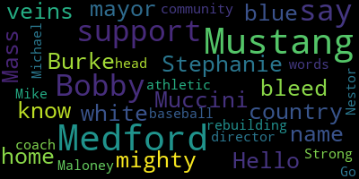
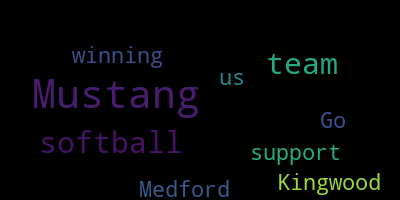

[6XRDVyVUfUQ_SPEAKER_04]: Harvey you have a problem the Mustangs
[Burke]: Hello, my name is Stephanie Muccini-Burke. I'm the mayor of Medford, Mass., home of the mighty Medford Mustangs. They say up here in Medford country that our veins bleed blue and white, and we know you're the same. We're here to support you in rebuilding your community. I'm here with our athletic director, Bobby Maloney, and our head baseball coach, Mike Nestor. Bobby, would you like to say a few words?
[Robert Maloney]: Yeah, Barry Campbell, from one Mustang to another, we're coming with some help. The citizens in the school department are going to step up, and you're going to get a nice truckload from Local 25 headed your way. Good luck, keep us in touch, and thoughts and prayers are with the entire community.
[Burke]: Michael.
[SPEAKER_02]: Coach Kelly Meade, baseball coach. From one to another, we're here, we got your back. We're going to show you what Mustang Strong is all about.
[Burke]: Mustang Strong!
[4D0eqMvSYMA_SPEAKER_14]: From our Mustangs in Medford to your Mustangs in Texas, you have our support. We're with you. Go Mustangs!
[Robert Maloney]: Houston, we stand with you.
[6XRDVyVUfUQ_SPEAKER_04]: Go Mustangs! Go Mustangs! Go Mustangs!
[SPEAKER_05]: Go Mustangs! Alright, from Mustang to Mustangs. This is Coach Joe Donlon of the Medford High School Mustangs letting you guys know that we are one track family and we're here for you.
[Robert Maloney]: We support you!
[SPEAKER_01]: Ford Mustangs, we're here for you. Once a Mustang, always a Mustang.
[6XRDVyVUfUQ_SPEAKER_04]: Go Mustangs!
[SPEAKER_06]: Hello. The Mustang way is that we take care of our own and we support each other at all times. We're with you every gallop of the way.
[6XRDVyVUfUQ_SPEAKER_04]: From our Mustangs to yours, keep on galloping!
[Cruz]: Go Mustangs!
[6XRDVyVUfUQ_SPEAKER_04]: We support the Kingman Mustangs! Go Mustangs!
[SPEAKER_01]: I want to first pass along my best wishes for your recovery efforts down there in Houston. Go Mustangs!
[6XRDVyVUfUQ_SPEAKER_04]: Go Mustangs!
[SPEAKER_02]: Go Mustangs! Go Mustangs! Go Mustangs baby, let's go! Go Mustangs! Go Mustangs! The Methodist Mustangs are here to support the Kingswood Mustangs. Let's Mustang stick together, hang in there for the good and bad. We're with you.
[6XRDVyVUfUQ_SPEAKER_04]: We're gonna fight!
[Jason Nascimento]: We support you!
[6XRDVyVUfUQ_SPEAKER_04]: Go Mustangs!
[Jason Nascimento]: Mustangs, we got your back! Go Mustangs! Mustangs support Mustangs. Hang in there. Hi Kingwood High School. My name is Jason Nascimento. I'm the head football coach here at Medford High School. And all the Medford Mustangs here want to wish all of our well-wishers to support you guys.
[Belson]: Go Mustangs! We, Mustangs, are with you. From us to you, we support you.
[6XRDVyVUfUQ_SPEAKER_04]: From our Mustangs to yours, keep pushing forward. It gets better. You've got this. Go Mustangs!
[Burke]: We support you.
[6XRDVyVUfUQ_SPEAKER_04]: Go Mustangs!
[Burke]: Go Mustangs!
[6XRDVyVUfUQ_SPEAKER_04]: Why do I do this?
[Belson]: From the Medford Mustang softball team to the Kingwood Mustang softball team. It's winning.
[Cruz]: Mustangs on three. One, two, three. Mustangs! You're not the only one. We all have our ups and all have our downs. But we have to find a way around. This is not the end. can't fly into a better tomorrow and leave
|
total time: 0.4 minutes total words: 79  |
total time: 0.21 minutes total words: 28  |
||
{kind=link}
{kind=link}